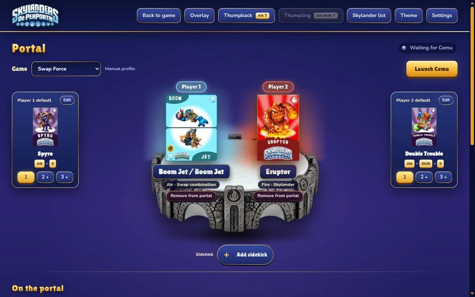
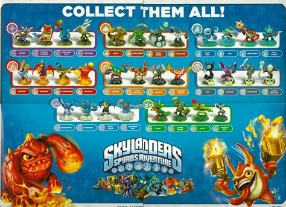

Click a sigil, press 1 to 9 (add Shift for Player 2) or hold L3+R3 on a controller.
Quick swap dial
Shortcuts that work in game
Automatic save backups
13 themes
GPL2.0+
Dè PerPortal
Your Portal of Power, rebuilt for Cemu.
Pick figures from your NFC dumps and put them on Cemu's emulated portal, for Player 1 and Player 2, without opening a single menu.
Two players, equal. Each has a default, three presets per game and their own shortcuts.
Never get up. Hold L3 + R3 and a dial opens over the game.
Saves stay safe. Every figure is copied before it touches the portal.
Know your collection. Levels, gold and what you are still missing.

Each player's default, one press awayBoth players on the portalSidekicks, traps and vehicles get their own slot
Not affiliated with Activision. Requires the supported Cemu Skylanders build and your own figure dumps. No figures included.
65e22a4e…ee280
Hold both sticks. Pick. Keep playing.
Press L3 and R3 together while a Skylanders game runs. Cemu freezes, the dial opens over it, and the game picks up again the moment you let go.
Hold the button, the space bar or your controller's L3 + R3.
0 sPress both sticksL3 + R3 on Xbox and PlayStation pads, including Parsec and Steam virtual ones.
2 sThe quick swap dial opensPoint a stick at an element, press A (Cross on PlayStation). LB / RB switch player, or open perks, traps and vehicles.
5 sThe full window comes upEvery screen and dialog works with only the stick, A and B (Cross and Circle on PlayStation).
Rather use the keyboard? These work while Cemu has focus.
Alt1…9-Load Player 1's Skylander for that element
AltShift1…-The same for Player 2
Alt0Put Player 1's default back
Alt←→Step through the presets
AltQWESwap Force perk bases, SuperChargers vehicles
AltDA random Skylander not yet tried on Windows
AltTThumpback. Try T on this page.
Every figure is backed up before it touches the portal.
Dè PerPortal keeps the last 10 versions of each figure. Press Restore twice to put an older save back; the one it replaces is kept too.
Gill Grunt left the portal without saving. Cemu only writes progress when the game saves. After 3 minutes without a save, you get this warning, so you know to save before swapping.
Collect them all. Then see what's missing.
Collection lists every figure of the game. Yours light up in their element's colour, with the level, gold and hero points read from their own save.
Six games. One portal.

Thirteen looks. One of them is a fast-food kiosk.
A theme for every game, one that follows the game you pick, and a few that are just jokes. The ice cream machine is broken.
How it works, for the curious.
An Electron window for the interface and a small native Windows helper, written in C, that works Cemu's Emulated USB Devices dialog for you.
Checks before it touches anything
The helper hashes Cemu's executable and only changes portal rows on the supported build.
Verified updates
Each start checks GitHub Releases, downloads the new ZIP and compares it to the release's SHA-256 before installing.
OBS overlay
A Browser Source page at 127.0.0.1:47831 shows what's on your portal. Only your computer can reach it.
Discord status and profiles
Show your game and figures on Discord, and export or import a game's defaults, presets and shortcuts.
Build it yourself (x64 Visual Studio prompt)
rem Windows controller, then the app
npm ci
build.cmd
npm test
npm run dist
Honest note: Alt + D, Alt + G and the Discord status are new in 2.0 and haven't been tried on Windows yet. Unit tests, Playwright UI tests and Wine smoke tests run on every release.
Set up in three steps.
Download the ZIP
Get the latest release for Windows x64. Node.js and developer tools are not needed.
Extract it next to Cemu
Put all of it beside the Cemu executable and run Dè PerPortal.exe.
Add your figures
Put your dumps in an NFC folder beside it. Subfolders are fine.
Dè PerPortal needs the Cemu Skylanders build with Cemu's English interface. Its SHA-256 is: